Contents
- express convolution as matrix multiplication
- matlab DTFT implementation
- padding zero after array in time domain, densifies fft in frequency domain
- compare angle of our own DFT and matlab's fft
- compare real and imag part of our own DFT and matlab's fft
- calculate fft of a signal that is not started from 0 ( for example started from -1 )
- Linearity
- Frequency-shifting (modulation) - example 1
- Frequency-shifting (modulation) - example 2
- conjugation
- folding
- convolution
- correlation
- multiplication
- Parseval's Theorem (energy)
clc; clear; close all;
express convolution as matrix multiplication
h = [1 2 3 4 5]'; x = randn(3,1); A = convmtx(h,length(x)); y = A*x; y1 = conv(h,x); figure stem(y) hold on stem(y1) legend('convmtx','conv')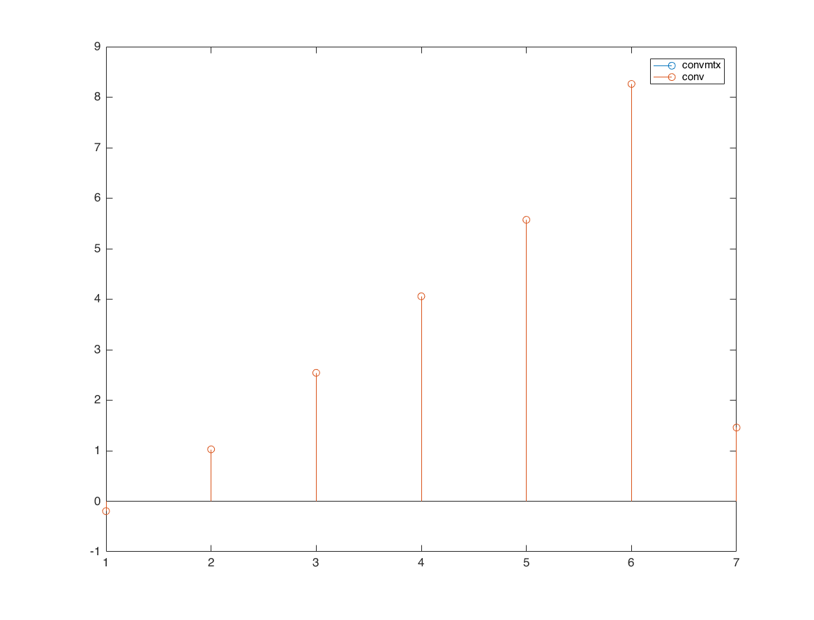
matlab DTFT implementation
n = -1:3; x = 1:5; M = 500; k = 0:M; w = (pi/M)*k; X = x * (exp(-1i*pi/M)).^(n'*k); magX = abs(X); angX = angle(X); realX = real(X); imagX = imag(X); subplot(2,2,1); plot(k/M, magX); grid on; xlabel('frequency in pi'); title('Magnitude'); subplot(2,2,2); plot(k/M, angX/pi); grid on; xlabel('frequency in pi'); title('Angle'); subplot(2,2,3); plot(k/M, realX); grid on; xlabel('frequency in pi'); title('real part'); subplot(2,2,4); plot(k/M, imagX); grid on; xlabel('frequency in pi'); title('imag part');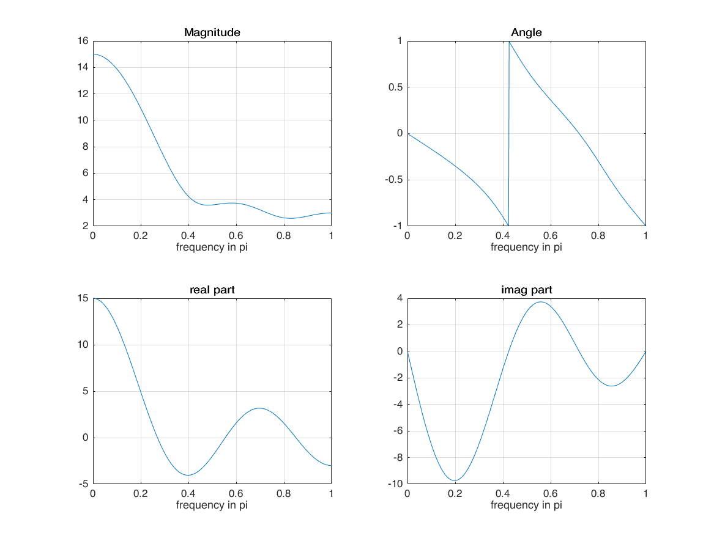
xf = fft(x); figure plot(abs(fftshift(xf)))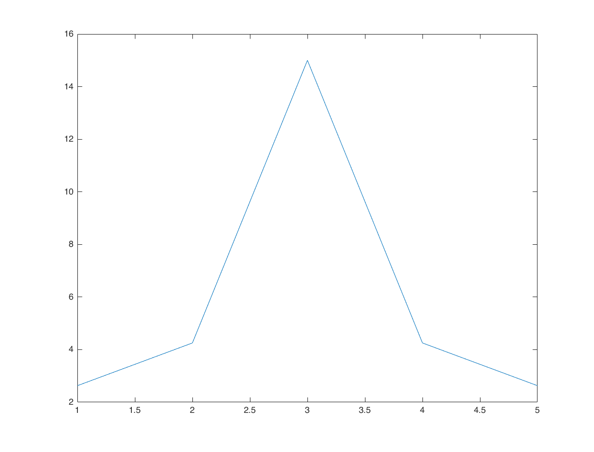
padding zero after array in time domain, densifies fft in frequency domain
remember: frequency output of fft is 0 to 2pi. to shift it and align zero frequency at the center, we use fftshift
x1 = zeros([M*2,1]); x1(1:length(x)) = x; xf = fft(x1); figure subplot(3,1,1); plot(abs(xf)); axis tight; subplot(3,1,2); plot(abs(fftshift(xf))); axis tight; subplot(3,1,3); plot(abs(xf(1:501))); axis tight;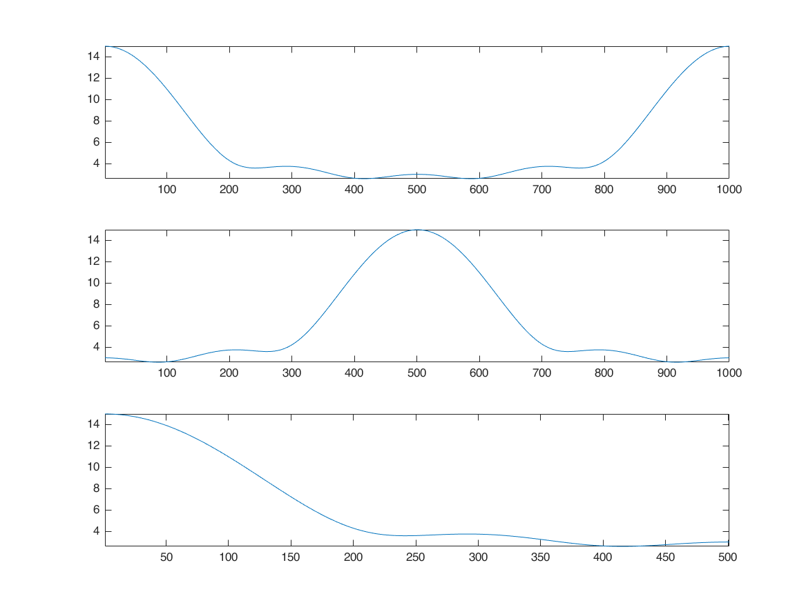
compare angle of our own DFT and matlab's fft
figure plot(k/M, realX); grid on; hold on; plot(k/M, real(xf(1:length(X))), 'r') xlabel('frequency in pi'); title('Angle'); legend(['real part of our own DFT function'],['real part of MATLAB FFT'])

compare real and imag part of our own DFT and matlab's fft
they are different because of the horizontal axis! horizontal axis of input is n=-1:3 we use horizontal axis when calculating X we did not use it with matlab FFT matlab assumes that horizontal axis of signal starts from 0! with time shifting property of DFT (DTFT), we can overcome this limitation
figure plot(k/M, angX/pi); grid on; hold on; plot(k/M, angle(xf(1:length(X)))/pi, 'r') xlabel('frequency in pi'); title('Angle'); legend(['angle of our own DFT function'],['angle of MATLAB FFT'])

calculate fft of a signal that is not started from 0 ( for example started from -1 )
amount_of_shift = -1; xf1 = xf(1:length(X)) .* exp(-1i*w'*(amount_of_shift)); figure subplot(2,2,1); plot(k/M, magX); grid on; hold on; plot(k/M, abs(xf1)) xlabel('frequency in pi'); title('Magnitude'); subplot(2,2,2); plot(k/M, angX/pi); grid on; hold on; plot(k/M, angle(xf1)/pi) xlabel('frequency in pi'); title('Angle'); subplot(2,2,3); plot(k/M, realX); grid on; hold on; plot(k/M, real(xf1)) xlabel('frequency in pi'); title('real part'); subplot(2,2,4); plot(k/M, imagX); grid on; hold on; plot(k/M, imag(xf1)) xlabel('frequency in pi'); title('imag part');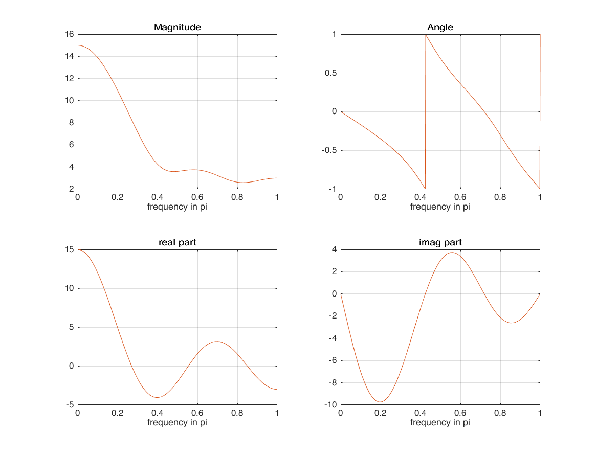
Linearity
n1 = -1:3; x1 = 1:5; alpha = 2; xx1 = alpha*x1; n2 = 0:6; x2 = -5:1; beta = 3; xx2 = beta*x2; [xx3,n3] = sigadd(xx1,n1,xx2,n2); M = 500; %501 samples k = 0:M; w = (pi/M)*k; X1 = x1*(exp(-1i*pi/M)).^(n1'*k); X2 = x2*(exp(-1i*pi/M)).^(n2'*k); X3 = xx3*(exp(-1i*pi/M)).^(n3'*k); XX3 = alpha*X1 + beta*X2; subplot(5,1,1); stem(n1,x1); xlim([-2 7]); subplot(5,1,2); stem(n2,x2); xlim([-2 7]); subplot(5,1,3); stem(n3,xx3); xlim([-2 7]); subplot(5,1,4); plot(k/M, abs(X3)); hold on; plot(k/M, abs(XX3)); subplot(5,1,5); plot(k/M, angle(X3)/pi); hold on; plot(k/M, angle(XX3)/pi); ylim([-1.5,1.5]);

Frequency-shifting (modulation) - example 1
n1 = -1:3;
x1 = 1:5;
w0 = pi/4;
x2 = x1 .* exp(1i*w0*n1);
X1 = x1*(exp(-1i*pi/M)).^(n1'*k);
X2 = x2*(exp(-1i*pi/M)).^(n1'*k);
figure
plot(k/M, abs(X1)); hold on;
plot(k/M, abs(X2))
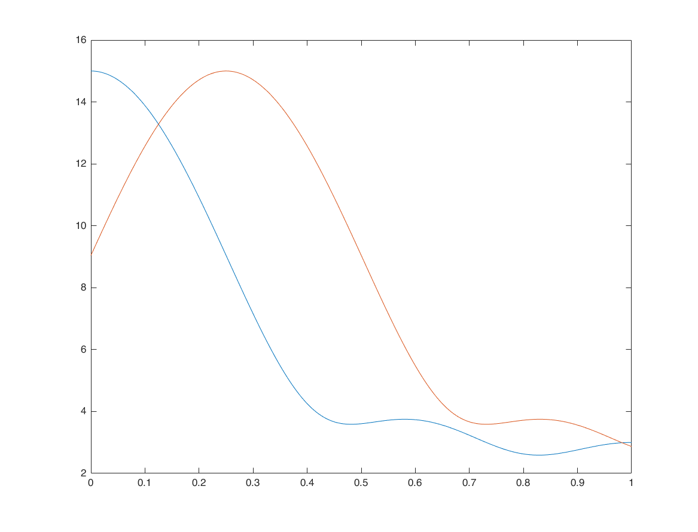 Frequency-shifting (modulation) - example 2
n = -100:100; x = cos(0.2*n); x1 = x.*exp(1i*pi/2*n); % modulated signal M = 500; k = -M:M; w = (pi/M)*k; X = x*(exp(-1i*pi/M)).^(n'*k); X1 = x1*(exp(-1i*pi/M)).^(n'*k); [XX1,F1] = sigshift(X,w,pi/2); hold on; plot(k/M, abs(X1),'g') plot(F1/pi, abs(XX1),'r')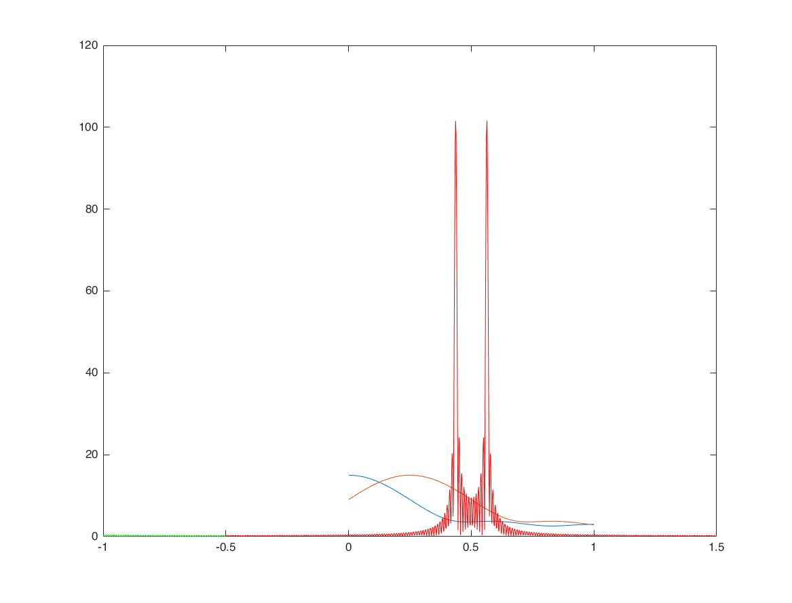
conjugation
n = -1:3; x = rand(1,5)+1i*rand(1,5); x1=conj(x); figure subplot(3,2,1); stem(n,real(x)) subplot(3,2,2); stem(n,imag(x)) subplot(3,2,3); stem(n,real(x1)) subplot(3,2,4); stem(n,imag(x1)) M = 500; k = -M:M; w = (pi/M)*k; X = x*(exp(-1i*pi/M)).^(n'*k); X1 = x1*(exp(-1i*pi/M)).^(n'*k); XX1 = conj(sigfold(X,w)); subplot(3,2,5); hold on; plot(k/M, abs(X1),'k'); plot(k/M, abs(XX1),'r--','linewidth',2); subplot(3,2,6); hold on; plot(k/M, angle(X1)/pi,'k'); plot(k/M, angle(XX1)/pi,'r--','linewidth',2); ylim([-1.5;1.5]);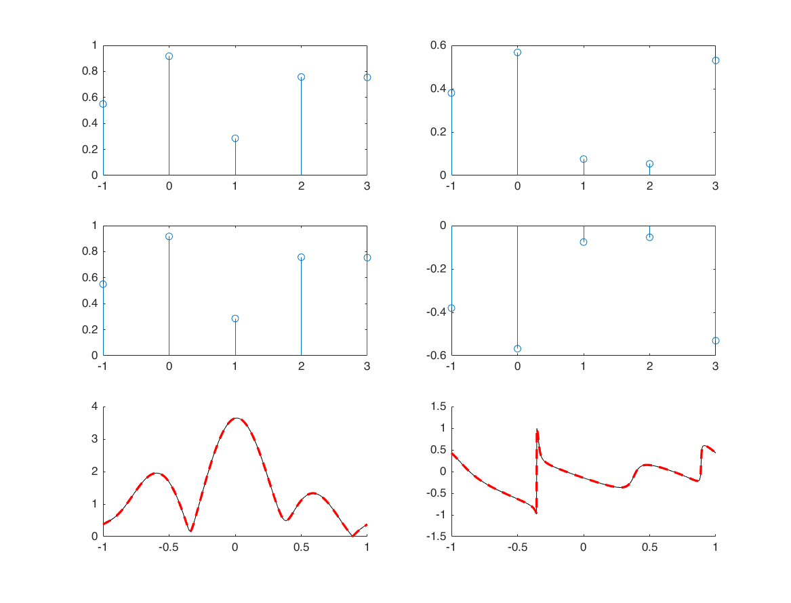
folding
nx = -1:3; x = randn(1,5); [x1,nx1] = sigfold(x,nx); M = 500; k = -M:M; w = (pi/M)*k; X = x*(exp(-1i*pi/M)).^(nx'*k); X1 = x1*(exp(-1i*pi/M)).^(nx1'*k); subplot(4,1,1) stem(nx,x); xlim([-5 5]) subplot(4,1,2) stem(nx1,x1); xlim([-5 5]) subplot(4,1,3); hold on; plot(w/pi, real(X), 'k') plot(w/pi, real(X1), 'r--') subplot(4,1,4); hold on; plot(w/pi, imag(X), 'k') plot(w/pi, imag(X1), 'r--')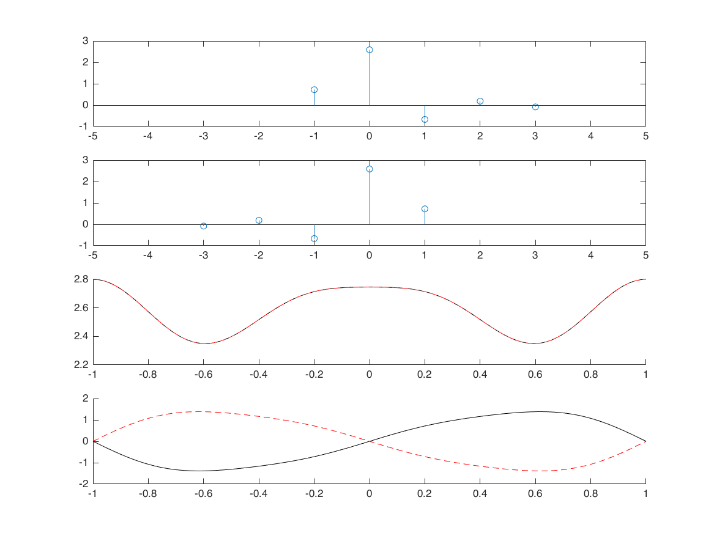
convolution
nx1 = -1:3; x1 = randn([1 5]); nx2 = -3:2; x2 = randn([1 6]); [x3, nx3] = conv_m(x1,nx1,x2,nx2); M = 500; k = -M:M; w = (pi/M)*k; X1 = x1*(exp(-1i*pi/M)).^(nx1'*k); X2 = x2*(exp(-1i*pi/M)).^(nx2'*k); X3 = x3*(exp(-1i*pi/M)).^(nx3'*k); XX3 = X1.*X2; figure subplot(5,1,1); stem(nx1,x1); xlim([-6 6]); subplot(5,1,2); stem(nx2,x2); xlim([-6 6]); subplot(5,1,3); stem(nx3,x3); xlim([-6,6]); subplot(5,1,4); hold on; plot(w/pi, real(X3), 'k') plot(w/pi, real(XX3), 'r--') subplot(5,1,5); hold on; plot(w/pi, imag(X3), 'k') plot(w/pi, imag(XX3), 'r--')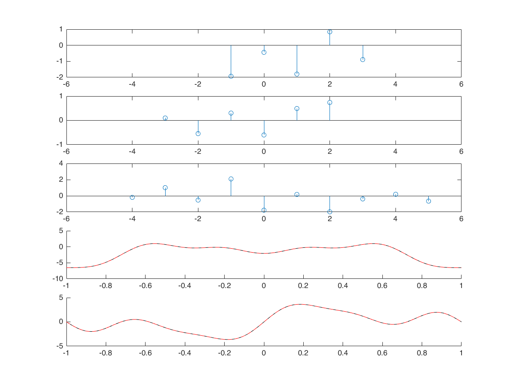
correlation
nx1 = -1:3; x1 = randn([1 5]); nx2 = -3:2; x2 = randn([1 6]); [x3, nx3] = xcorr_m(x1,nx1,x2,nx2); % define frequency axis M = 500; k = -M:M; w = (pi/M)*k; X1 = x1*(exp(-1i*pi/M)).^(nx1'*k); X2 = x2*(exp(-1i*pi/M)).^(nx2'*k); X3 = x3*(exp(-1i*pi/M)).^(nx3'*k); XX3 = X1.*conj(X2); figure; subplot(5,1,1); stem(nx1,x1); xlim([-6 6]); subplot(5,1,2); stem(nx2,x2); xlim([-6 6]); subplot(5,1,3); stem(nx3,x3); xlim([-6 6]); subplot(5,1,4); hold on; plot(w/pi, real(X3), 'k'); plot(w/pi, real(XX3), 'r--'); subplot(5,1,5); hold on; plot(w/pi, imag(X3), 'k'); plot(w/pi, imag(XX3), 'r--');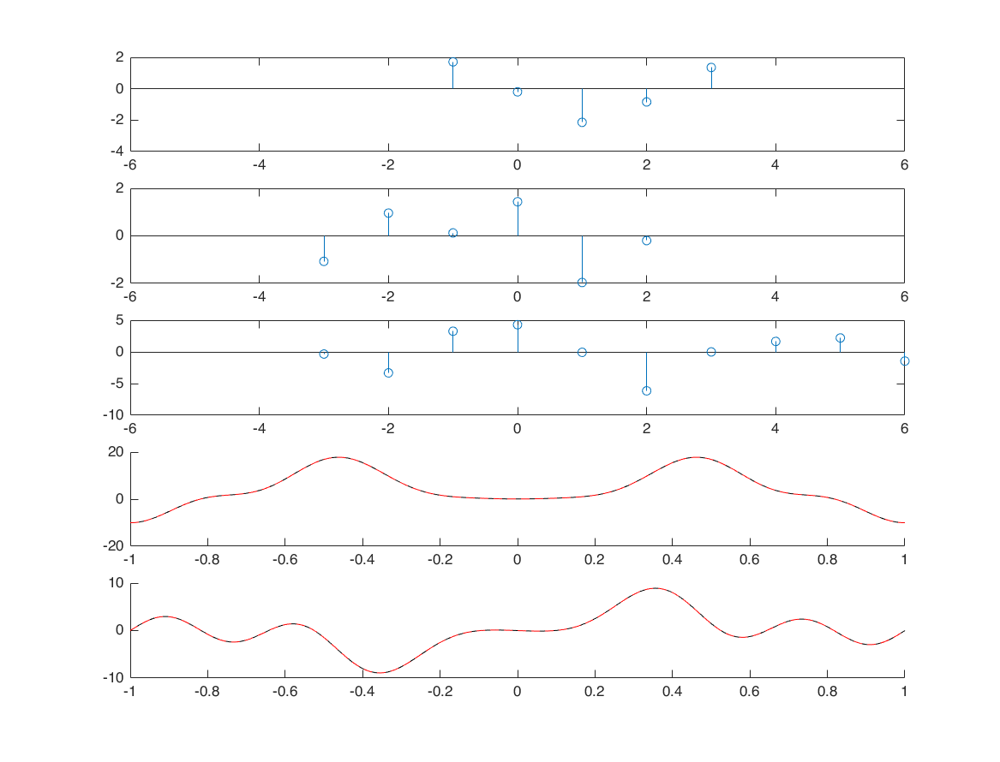
multiplication
nx1 = -1:3; x1 = randn([1 5]); nx2 = -3:2; x2 = randn([1 6]); [x3, nx3] = sigmult(x1,nx1,x2,nx2); % define frequency axis M = 500; k = -M:M; w = (pi/M)*k; X1 = x1*(exp(-1i*pi/M)).^(nx1'*k); X2 = x2*(exp(-1i*pi/M)).^(nx2'*k); X3 = x3*(exp(-1i*pi/M)).^(nx3'*k); [XX3,wp] = conv_m(X1,k,X2,k); figure; subplot(5,1,1); stem(nx1,x1); xlim([-6 6]); subplot(5,1,2); stem(nx2,x2); xlim([-6 6]); subplot(5,1,3); stem(nx3,x3); xlim([-6 6]); subplot(5,1,4); hold on; plot(w/pi, abs(X3), 'k'); subplot(5,1,5); hold on; plot(wp/1000, abs(XX3), 'k'); % Question: why the 4th and 5th plots are different? Why the 5th plot has % a larger range than the 4th plot?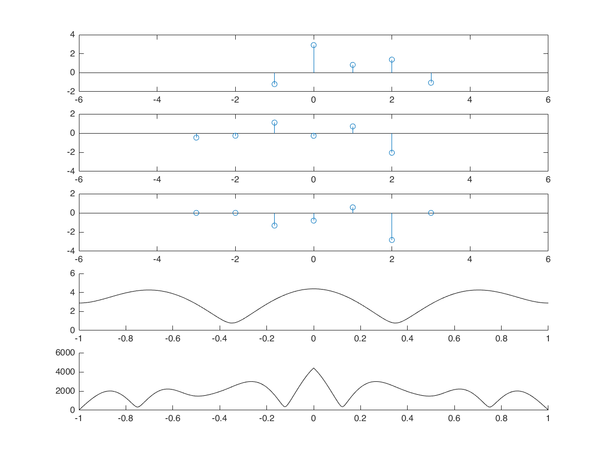
Parseval's Theorem (energy)
nx = -1:3; x = randn([1,5]); E1 = sum(x.^2); M = 100; k = -M:M; w = (pi/M)*k; X = x*(exp(-1i*pi/M)).^(nx'*k); E2 = trapz(abs(X).^2)*(pi/M)/(2*pi); % we multiply the trapz integral result with (pi/M), because trapz computes % an approximation of the integral of Y via the trapezoidal method (with unit spacing) % thus, to create dw with pi/M spacing, we multiply it by pi/M. disp(['Energy in time domain: ', num2str(E1)]) disp(['Energy in frequency domain: ', num2str(E2)])
Energy in time domain: 3.6282 Energy in frequency domain: 3.6282